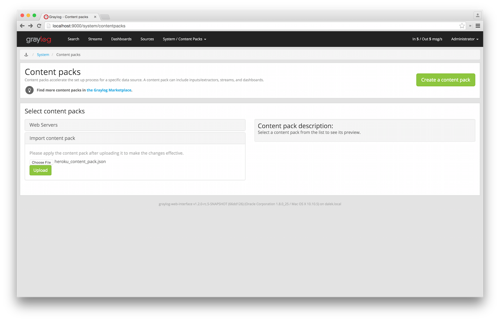
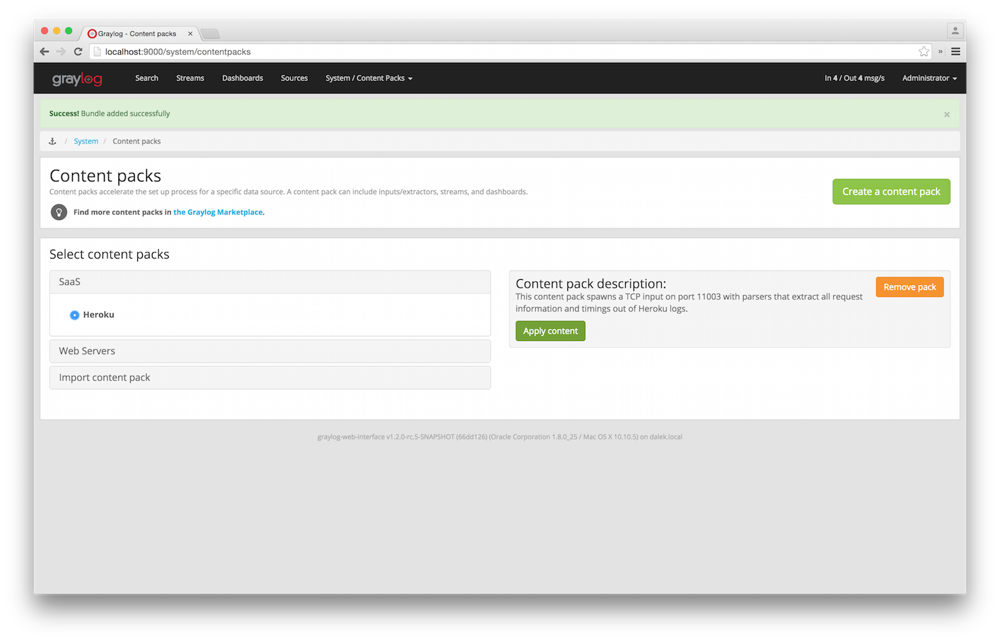
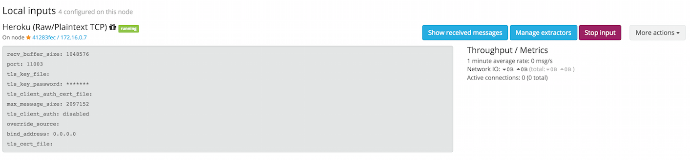
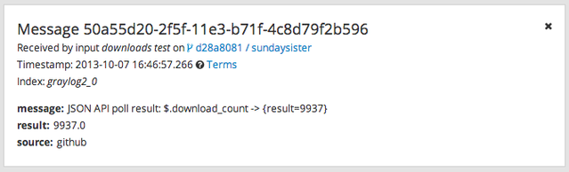

Sending in log data¶
A Graylog setup is pretty worthless without any data in it. This page explains the basic principles of getting your data into the system and also explains common fallacies.
What are Graylog message inputs?¶
Message inputs are the Graylog parts responsible for accepting log messages. They are launched from the web interface (or the REST API) in the System -> Inputs section and are launched and configured without the need to restart any part of the system.
Content packs¶
Content packs are bundles of Graylog input, extractor, stream, dashboard, and output configurations that can provide full support for a data source. Some content packs are shipped with Graylog by default and some are available from the website. Content packs that were downloaded from here can be imported using the Graylog web interface.
You can load and even create own content packs from the System -> Content Packs section of your Graylog web interface.
Syslog¶
Graylog is able to accept and parse RFC 5424 and RFC 3164 compliant syslog messages and supports TCP transport with both the octet counting or termination character methods. UDP is also supported and the recommended way to send log messages in most architectures.
Many devices, especially routers and firewalls, do not send RFC compliant syslog messages. This might result in wrong or completely failing parsing. In that case you might have to go with a combination of raw/plaintext message inputs that do not attempt to do any parsing and Extractors.
Rule of thumb is that messages forwarded by rsyslog or syslog-ng are usually parsed flawlessly.
Sending syslog from Linux hosts¶
rsyslog¶
Forwarding syslog messages with rsyslog is easy. The only important thing to get the most out of your logs is following
RFC 5424. The following examples configures your rsyslog daemon to send
RFC 5424 date to Graylog syslog inputs:
UDP:
$template GRAYLOGRFC5424,"<%PRI%>%PROTOCOL-VERSION% %TIMESTAMP:::date-rfc3339% %HOSTNAME% %APP-NAME% %PROCID% %MSGID% %STRUCTURED-DATA% %msg%\n"
*.* @graylog.example.org:514;GRAYLOGRFC5424
TCP:
$template GRAYLOGRFC5424,"<%PRI%>%PROTOCOL-VERSION% %TIMESTAMP:::date-rfc3339% %HOSTNAME% %APP-NAME% %PROCID% %MSGID% %STRUCTURED-DATA% %msg%\n"
*.* @@graylog.example.org:514;GRAYLOGRFC5424
(The difference between UDP and TCP is using @ instead of @@ as target descriptor.)
Alternatively, the rsyslog built-in template RSYSLOG_SyslogProtocol23Format sends log messages in the same format as above. This exists in rsyslog versions of at least 5.10 or later.
The UDP examples above becomes:
*.* @graylog.example.org:514;RSYSLOG_SyslogProtocol23Format
syslog-ng¶
Configuring syslog-ng to send syslog to Graylog is equally simple. Use the syslog function to send
RFC 5424 formatted syslog messages via TCP to the remote Graylog host:
# Define TCP syslog destination.
destination d_net {
syslog("graylog.example.org" port(514));
};
# Tell syslog-ng to send data from source s_src to the newly defined syslog destination.
log {
source(s_src); # Defined in the default syslog-ng configuration.
destination(d_net);
};
Sending syslog from MacOS X hosts¶
Sending log messages from MacOS X syslog daemons is easy. Just define a graylog-server instance as UDP log target by
adding this line in your /etc/syslog.conf:
*.* @graylog.example.org:514
Now restart syslogd:
$ sudo launchctl unload /System/Library/LaunchDaemons/com.apple.syslogd.plist
$ sudo launchctl load /System/Library/LaunchDaemons/com.apple.syslogd.plist
Important: If syslogd was running as another user you might end up with multiple syslogd instances and strange
behaviour of the whole system. Please check that only one syslogd process is running:
$ ps aux | grep syslog
lennart 58775 0.0 0.0 2432768 592 s004 S+ 6:10PM 0:00.00 grep syslog
root 58759 0.0 0.0 2478772 1020 ?? Ss 6:09PM 0:00.01 /usr/sbin/syslogd
That’s it! Your MacOS X syslog messages should now appear in your Graylog system.
GELF / Sending from applications¶
The Graylog Extended Log Format (GELF) is a log format that avoids the shortcomings of classic plain syslog and is perfect to logging from your application layer. It comes with optional compression, chunking and most importantly a clearly defined structure. There are dozens of GELF libraries for many frameworks and programming languages to get you started.
Read more about GELF on graylog.org.
GELF via HTTP¶
You can send in all GELF types via HTTP, including uncompressed GELF that is just a plain JSON string.
After launching a GELF HTTP input you can use the following endpoints to send messages:
http://graylog.example.org:[port]/gelf (POST)
Try sending an example message using curl:
curl -XPOST http://graylog.example.org:12202/gelf -p0 -d '{"short_message":"Hello there", "host":"example.org", "facility":"test", "_foo":"bar"}'
Both keep-alive and compression are supported via the common HTTP headers. The server will return a 202 Accepted when the message
was accepted for processing.
Microsoft Windows¶
Our recommended way to forward Windows log data (for example EventLog) to Graylog is to use our own log collector. It comes with native support for reading Windows event logs.
Heroku¶
Heroku allows you to forward the logs of your application to a custom syslog server by creating a so called Syslog drain. The drain sends all logs to the configured server(s) via TCP. Following example shows you how to configure Graylog to receive the Heroku logs and extract the different fields into a structured log message.
Configuring Graylog to receive Heroku log messages¶
The Graylog Marketplace contains a content pack for Heroku logs, including extractors to parse the Heroku log format. You can download and use that content pack to configure Graylog to be able to receive Heroku logs.
Go to System -> Content packs, and click on Import content pack. Select the content pack downloaded from the Graylog Marketplace, and click Upload
On the same page, select Heroku on the SaaS category on the left column, and click on Apply.
That’s it! You can verify that there is a new input for Heroku, containing a set of extractors to parse your log messages. Make sure your firewall setup allows incoming connections on the inputs port!
Configuring Heroku to send data to your Graylog setup¶
Heroku has a detailed documentation regarding the Syslog drains feature. The following example shows everything that is needed to setup the drain for you application:
$ cd path/to/your/heroku/app
$ heroku drains
No drains for this app
$ heroku drains:add syslog://graylog.example.com:5556
Successfully added drain syslog://graylog.example.com:5556
$ heroku drains
syslog://graylog.example.com:5556 (d.8cf52d32-7d79-4653-baad-8cb72bb23ee1)
The Heroku CLI tool needs to be installed for this to work.
You Heroku application logs should now show up in the search results of your Graylog instance.
Ruby on Rails¶
This is easy: You just need to combine a few components.
Log all requests and logger calls into Graylog¶
The recommended way to send structured information (i.e. HTTP return code, action, controller, ... in additional fields) about every request and
explicit Rails.logger calls is easily accomplished using the GELF gem and
lograge. Lograge builds one combined log entry for every request (instead of several lines like the
standard Rails logger) and has a Graylog output since version 0.2.0.
Start by adding Lograge and the GELF gem to your Gemfile:
gem "gelf"
gem "lograge"
Now configure both in your Rails application. Usually config/environments/production.rb is a good place for that:
config.lograge.enabled = true
config.lograge.formatter = Lograge::Formatters::Graylog2.new
config.logger = GELF::Logger.new("graylog.example.org", 12201, "WAN", { :host => "hostname-of-this-app", :facility => "heroku" })
This configuration will also send all explicit Rails.logger calls (e.g. Rails.logger.error "Something went wrong") to Graylog.
Log only explicit logger calls into Graylog¶
If you don’t want to log information about every request, but only explicit Rails.logger calls, it is enough to only configure the Rails logger.
Add the GELF gem to your Gemfile:
gem "gelf"
...and configure it in your Rails application. Usually config/environments/production.rb is a good place for that:
config.logger = GELF::Logger.new("graylog.example.org", 12201, "WAN", { :host => "hostname-of-this-app", :facility => "heroku" })
Heroku¶
You need to apply a workaround if you want custom logging on Heroku. The reason for this is that Heroku injects an own logger (rails_log_stdout),
that overwrites your custom one. The workaround is to add a file that makes Heroku think that the logger is already in your application:
$ touch vendor/plugins/rails_log_stdout/heroku_fix
Raw/Plaintext inputs¶
The built-in raw/plaintext inputs allow you to parse any text that you can send via TCP or UDP. No parsing is applied at all by default until you build your own parser using custom Extractors. This is a good way to support any text-based logging format.
You can also write Plugins if you need extreme flexibility.
JSON path from HTTP API input¶
The JSON path from HTTP API input is reading any JSON response of a REST resource and stores a field value of it as a Graylog message.
Example¶
Let’s try to read the download count of a release package stored on GitHub for analysis in Graylog. The call looks like this:
$ curl -XGET https://api.github.com/repos/YourAccount/YourRepo/releases/assets/12345
{
"url": "https://api.github.com/repos/YourAccount/YourRepo/releases/assets/12345",
"id": 12345,
"name": "somerelease.tgz",
"label": "somerelease.tgz",
"content_type": "application/octet-stream",
"state": "uploaded",
"size": 38179285,
"download_count": 9937,
"created_at": "2013-09-30T20:05:01Z",
"updated_at": "2013-09-30T20:05:46Z"
}
The attribute we want to extract is download_count so we set the JSON path to $.download_count.
This will result in a message in Graylog looking like this:
You can use Graylog to analyse your download counts now.
JSONPath¶
JSONPath can do much more than just selecting a simple known field value. You can for example do this to select the first download_count
from a list of releases where the field state has the value uploaded:
$.releases[?(@.state == 'uploaded')][0].download_count
...or only the first download count at all:
$.releases[0].download_count
You can learn more about JSONPath here.